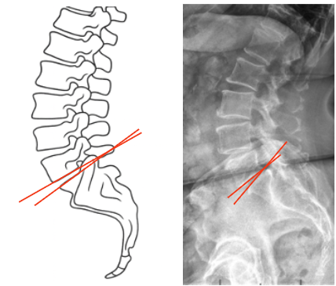

1) Description of Measurement
The Slip Angle, also known as the Lumbosacral Kyphosis Angle, quantifies the angular relationship between the inferior endplate of L5 and the superior endplate of S1. It measures the kyphotic deformity at the lumbosacral junction, particularly relevant in high-grade spondylolisthesis.
This angle reflects the degree of segmental kyphosis and helps determine instability severity and surgical reduction goals. A higher slip angle signifies increased anterior translation of L5 over S1, leading to greater sagittal malalignment and shear stress at the lumbosacral junction.
The measurement is crucial for classifying deformity, predicting postoperative balance, and guiding reduction strategy and fusion alignment.
2) Instructions to Measure
3) Normal vs. Pathologic Ranges
Key Point:
The higher the slip angle, the greater the degree of local kyphosis and mechanical disadvantage at the lumbosacral junction. Slip angle correlates strongly with clinical deformity and postoperative reduction goals.
4) Important References
Dubousset J, Herring JA, Shufflebarger H. Spondylolisthesis in children and adolescents. Spine. 1999;24(24):2640–2648.
Boxall D, Bradford DS, Winter RB, Moe JH. Management of severe spondylolisthesis in children and adolescents. J Bone Joint Surg Am. 1979;61(4):479–495.
Marchetti PG, Bartolozzi P. Classification of spondylolisthesis as a guideline for treatment. In: Bridwell KH, DeWald RL, eds. The Textbook of Spinal Surgery. 3rd ed. Lippincott Williams & Wilkins; 2011.
Hresko MT, Labelle H, Roussouly P, Berthonnaud E. Classification of high-grade spondylolisthesis based on pelvic balance: the importance of sagittal alignment. Spine. 2007;32(20):2208–2213.
Labelle H, Mac-Thiong JM, Roussouly P, et al. Spino-pelvic alignment after surgical correction for developmental spondylolisthesis. Eur Spine J. 2011;20(Suppl 5):S817–S825.
5) Other info....
The Slip Angle directly reflects segmental kyphosis at L5–S1 and correlates with Meyerding Grade for classifying spondylolisthesis severity.
Excessive lumbosacral kyphosis can result in global sagittal imbalance, pelvic retroversion, and functional disability.
Reduction and fusion aim to restore lordosis and reduce the slip angle to <20°, improving global alignment and functional outcomes.
The parameter is particularly valuable in high-grade or dysplastic spondylolisthesis to guide whether in situ fusion or partial reduction is indicated.
The measurement should always be taken in standing lateral films, as supine imaging underestimates true deformity.
For research and comparison, the Slip Angle is often reported alongside Pelvic Incidence (PI), Sacral Slope (SS), and Pelvic Tilt (PT) for comprehensive spinopelvic evaluation.
Advanced imaging (CT or EOS) can be used for enhanced reproducibility in surgical planning.